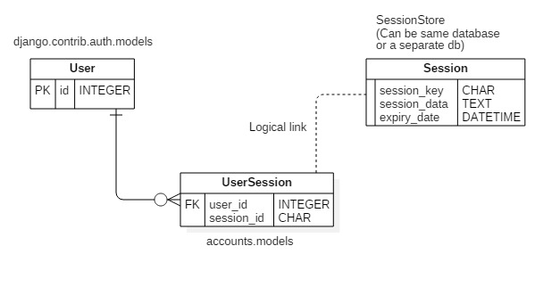

Session Management¶
This section discusses the session management for this project. The session module mostly uses django session framework and extends it keeping in mind that session storage can be local database (default database for the project) or a separate database for sessions only (e.g. Redis).
Session Expiry¶
The session expiry time depends upon the type of user which has logged in:
Staff user: When a staff user logs in via django admin or other administrator login, the session expire when:
- Login age increases beyond
settings.SESSION_COOKIE_AGEseconds (8 Hours).- After the browser is closed.
Public user: When a public user login from web portal only, there are two major cases:
Remember me is selected: Session expires when:
- Login age exceeds
settings.SESSION_COOKIE_AGE_PUBLICseconds (24 Hours).Warning
Session does NOT expire after browser is closed when user selects ‘Remember me’ option.
Remember me is NOT selected: Session expires when:
- Login age increases beyond
settings.SESSION_COOKIE_AGEseconds (8 Hours).- After browser is closed.
Warning
Here session age should be
settings.SESSION_COOKIE_AGE_PUBLIC, however django automatically sets expiry age tosettings.SESSION_COOKIE_AGEwhen session expiry age is set to0explicitly inside the django view.
Extension to the framework¶
A major but justifiable gap in django session framework is that sessions do not store reference to user
for which session is created. This s because session storage can be different than user storage.
Hence, there is no way to determine list of sessions for a user. After login, a session is created in
SessionStore (As configured in settings; default is default database) and session_key is set in the
cookie which is send to the client. The same cookie is received back on
any requests and session instance is resolved by session_key.
For more information, refer: https://docs.djangoproject.com/en/1.10/topics/http/sessions/
So, inorder to map users with sessions, a separate model is made in the default database
accounts.models.UserSession that contains user foreign key and session key. For every session
the pair is maintained, which can be queried to retrieve all sessions of a user.
- Following database schema explains all:
- 
Guidelines:
Never use
django.contrib.sessions.models.Session. This model refers to database table created in default database as per settings. If SessionStroe is same as default database, this might work but incase SessionStore is shifted to other database, you will not be able to access session instances.Instead use
settings.SESSION_ENGINEto obtain SessionStore and then use provided methods to access session instance. For example:>>> from django.conf import settings >>> from importlib import import_module >>> engine = import_module(settings.SESSION_ENGINE) >>> _SessionStore = engine.SessionStore >>> session = _SessionStore('<session_key>') # This will give actual session instance